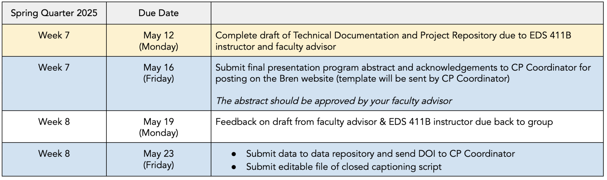
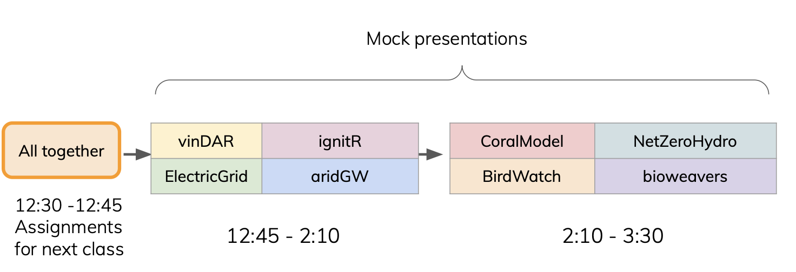
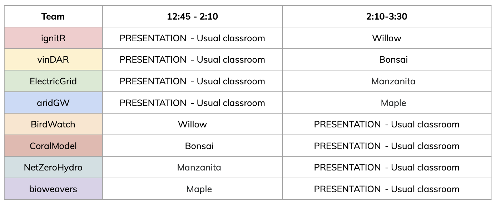

Week 6
Materials
📗 Faculty Review Logistics Slides
🎥 (1)MEDS final presentation recording - Improving Access to Fish Consumption Advisories and Maintaining Confidence in California’s Healthy Seafood Products. Project Website
🎥 (2)MEDS final presentation recording - Identifying Priority Survey Sites for Early-Season Milkweed Conservation Project Website
Schedule
1:00 - 1:05: Questions, Check-in, Upcoming Assignments
1:05 - 1:35: Faculty Review Logistics - Sam Shanny-Csik
1:35 - 2:00: 2023 MEDS capstone final presentation screening
1:50 - 2:00: Break
2:00 - 2:50: Dedicated work time & meetings with teams
2:50 - 2:00: Break
3:00 - 3:50: Dedicated work time & meetings with teams
3:50 - 4:00: Team Reflection
Recent & upcoming deadlines

Reminder
To do
📥 Submit complete draft of TD and project repository
When? Due on Monday, May 12 at 5 PM.
How? Send links to Google Doc and GitHub organization via email to advisor and casptone instructor.
- Incorporate the feedback you’ve received so far for your Technical Documentation and GitHub materials.
- Send an email to your advisor and casptone instructor with a link to you Google doc and a link to your project’s GitHub organization.
- Make the most out of this revision: it’s great to request specific feedback from your advisor! Is there any section you’d particularly like their input on? Let them know in your message. You can also tag us in comments inside your document.
🎤 Prepare final presentation mock presentation
When? Due by next class Wednesday, May 14.
How? Add slides to shared drive.
- Decide who will be presenting in the final public presentation. Remember every person in the team should be ready to present if needed.
- Review the guidelines for your presentation covered today
- Prepare a formal mock presentation (14 minutes long) for next Wednesday
- Strongly suggest following Alex’s presentation, point 6 to prepare your slides.
- The presentation design considerations from last quarter still apply.
- It’s ok if you add stand-in figures for prototypes and results for now.
- Focus on the story line: this is a public presentation for a general audience.
- Discuss your draft slides with your faculty advisor.
- Add your draft to our shared drive and be ready to do present next week!
📥 Submit final abstract and acknowledgements
When? Due on Friday, May 16 at 5 PM.
How? Upload to this Box folder as Word (.doc) or Google doc format, not PDF.
Abstracts and acknowledgments will be posted to the Bren website on your individual project pages and linked to the digital event program.
- Upload your abstract and acknowledgments in a single file to this Box folder.
- Include your group name in the file name.
- Word (.doc) or Google doc format preferred, not PDF (must be copy & paste-able).
Abstract instructions:
- The abstract is a one-paragraph brief summary of the Capstone Project, meant for a non-technical audience. The length of the abstract should be roughly 200 words. It can be the same as the one in your Technical Documentation.
- If your project title has changed, please include the new title in the abstract.
- Your advisor must approve the final abstract and any title updates before submission.
Acknowledgments instructions:
- The acknowledgements should include advisors, professionals, organizations, funding sources, etc. that assisted the Capstone Project.
- Each acknowledgment should include the person’s name, title (if known), and affiliation or organization.
- You should obtain authorization from each person or party being acknowledged that their names can be included in the abstract.
- Be consistent when listing your acknowledgments. You can list several people within an organization. Alphabetical order is preferred if listing several people in the same grouping.
- Example 1: Joan Dudney, Assistant Professor, Bren School
- Example 2: Bren School: Max Czapanskiy, Assistant Teaching Professor; Roland Geyer, Professor; Ruth Oliver, Assistant Professor
- Example 3: The Nature Conservancy: Kelly Easterday, Heather Gately, Moses Katkowski, Diego Ortiz, Dr. Mark Reynolds, and Dr. Rae Wynn-Grant
Tip: You can view Bren faculty titles here. Also, if you have an email from someone, you may find their title in their email signature.
📊 Initiate data archival
Friday, May 23 is the final due date to archive your capstone project data. This is an academic requirement.
Use this week and next to:
- Discuss with your advisor or client what data (if any) should be archived as part of the project deliverables.
- If necessary, make an appointment with the RDS team (rds@library.ucsb.edu) to discuss archival of data associated with your capstone project.
Before contacting the Library RDS team or archiving your data, please read through the Archiving and Preserving Your Data information by the Library RDS team for detailed guidelines about what to archive and the submission process to Dryad.
Next class schedule
The class will be divided in two blocks from 1:00 to 2:30 and from 2:30 to 4:00. Each team will present and provide feedback to other teams as follows:

Your theam should work on their project outside of their “presentation block”. The following rooms are reserved for you so you have a dedicated workspace during our usual class time. You’re welcome to use other places to work.
